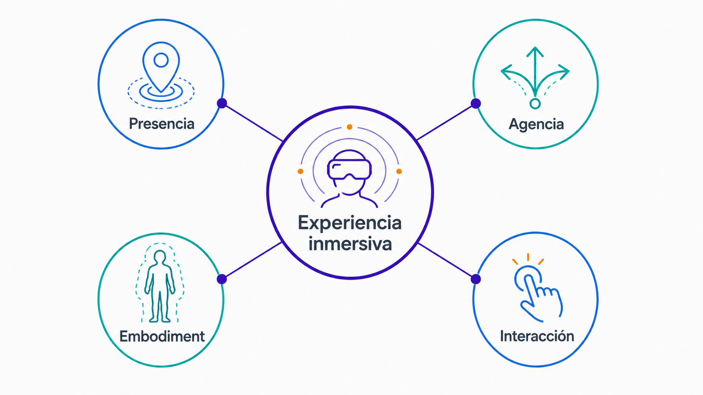
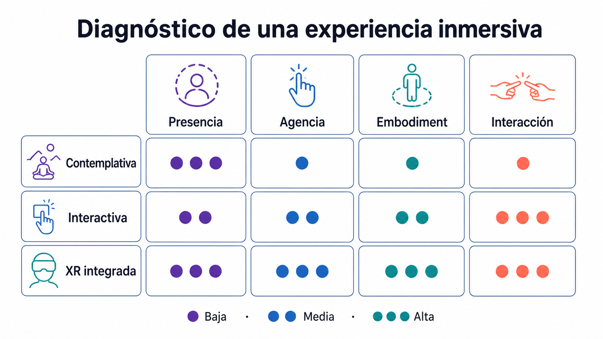
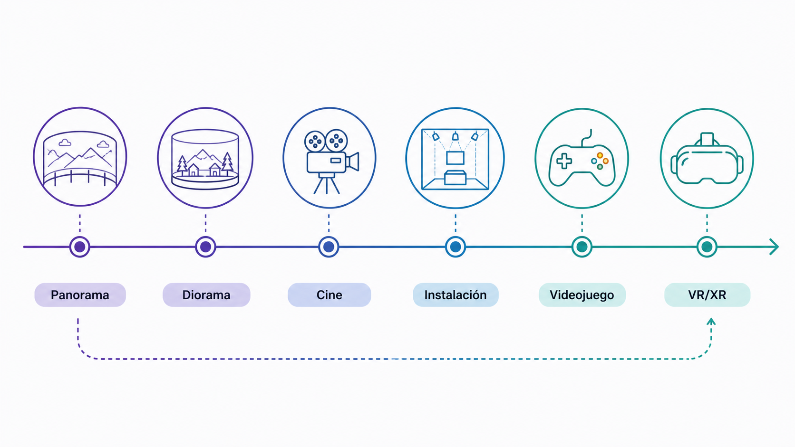

Definiciones operativas de inmersión, presencia, agencia y embodiment, y una genealogía histórica del impulso inmersivo.
Objetivos de aprendizaje
Definir qué entendemos por inmersión más allá del estereotipo tecnológico.
Distinguir presencia, agencia, embodiment e interacción como dimensiones complementarias.
Reconocer tipologías de inmersión (visual, espacial, sonora, narrativa, interactiva, social).
Situar la inmersión contemporánea en una genealogía histórica desde el panorama hasta la VR.
Conceptos clave
InmersiónPresenciaAgenciaEmbodimentInteracciónTipologías de inmersiónGenealogía del medio inmersivo
Introducción
Esta primera clase introduce el concepto de inmersión como una experiencia cultural, estética, psicológica y técnica. La inmersión no debe entenderse únicamente como el uso de un casco de realidad virtual, sino como una forma de diseñar situaciones en las que el usuario, espectador o jugador siente que entra en un mundo, sistema o espacio diferente al cotidiano. La sesión trabaja cuatro nociones fundamentales —inmersión, presencia, agencia y embodiment—, introduce tipologías de inmersión y sitúa las experiencias XR contemporáneas dentro de una genealogía histórica más amplia.
Conceptos en detalle
Inmersión
Sensación de entrar en un entorno, sistema o mundo que reclama nuestra atención y reorganiza temporalmente nuestra percepción. Puede producirse mediante imágenes, sonido, escala espacial, narración, interacción, reglas de juego o participación social. No depende exclusivamente de la tecnología.
Presencia
Sensación de "estar allí". El usuario siente que ocupa un lugar dentro del espacio mediado, aunque sepa que se encuentra en una sala o frente a una pantalla.
Continuidad espacial
Escala adecuada
Coherencia visual
Respuesta del entorno
Sonido envolvente
Estabilidad de la cámara
Correspondencia entre movimiento corporal y percepción
Agencia
Capacidad del usuario para actuar dentro de la experiencia y percibir que sus acciones tienen consecuencias significativas.
Cambiar el estado de un objeto
Abrir un camino
Activar una narración
Transformar el entorno
Elegir un recorrido
Influir en otro usuario o personaje
Decidir el ritmo de exploración
Embodiment
Sensación de tener o habitar un cuerpo dentro de la experiencia. Puede aparecer a través de un avatar visible, unas manos virtuales, una cámara subjetiva, una escala corporal coherente o una forma concreta de navegación.
Ver manos virtuales que responden a los controladores
Sentir que la altura de la cámara corresponde al cuerpo propio
Moverse físicamente para explorar un entorno
Inclinarse o girar el cuerpo como parte de la experiencia
Usar el cuerpo como interfaz
Interacción
Intercambio entre usuario y sistema. Conecta presencia y agencia: el usuario no solo está dentro de un espacio, sino que puede actuar dentro de él.
Directa: tocar, agarrar, empujar
Lejana: apuntar, seleccionar, lanzar un rayo
Corporal: moverse, inclinarse, girar
Gestual: usar manos, dedos o postura
Narrativa: elegir un camino o activar un recuerdo
Social: comunicarse o cooperar con otros usuarios
La inmersión no empieza con la realidad virtual
Uno de los errores más comunes es pensar que la inmersión empieza con los cascos de VR. Sin embargo, el deseo de rodear al espectador, absorber su atención y crear mundos alternativos aparece mucho antes: en el panorama del siglo XIX, los dioramas, el teatro y la escenografía envolvente, el cine expandido, las instalaciones artísticas, los parques temáticos, los videojuegos y, finalmente, la VR/AR contemporánea.
La tecnología cambia, pero el impulso es similar: construir una situación en la que el usuario no solo mira una imagen, sino que se siente situado dentro de una experiencia.
Inmersión no significa aislamiento total
La inmersión no implica necesariamente desconectarse del mundo real. En VR el usuario puede quedar visualmente aislado del entorno físico; en AR, el espacio físico sigue visible y se mezcla con elementos digitales; en una instalación, el cuerpo se mueve dentro de un espacio real transformado; en un videojuego, el jugador puede estar inmerso en un sistema de reglas mirando una pantalla; en una performance, la inmersión puede depender de la participación emocional o social.
Por tanto, la inmersión no es solo cuestión de cantidad de tecnología, sino de diseño de experiencia.
Presencia, agencia y embodiment como dimensiones complementarias
Presencia sin agencia: el usuario siente que está dentro del espacio, pero no puede modificarlo significativamente (por ejemplo, una experiencia contemplativa en VR donde solo observa un paisaje).
Agencia sin presencia fuerte: puede tomar decisiones, pero no siente que habita el espacio (un juego de estrategia con muchas decisiones pero sin sensación corporal).
Embodiment sin interacción compleja: siente que tiene cuerpo dentro de la experiencia, aunque las acciones disponibles sean limitadas (manos virtuales que solo sirven para explorar visualmente).
Interacción con presencia, agencia y embodiment: el usuario entra en una sala virtual, ve sus manos, coge un objeto, lo coloca en un soporte y el espacio responde con luz, sonido o narración. Esta articulación será clave en los laboratorios del curso.

Figura 1.1 — Presencia, agencia, embodiment e interacción como dimensiones de la inmersión.
Tipologías
Inmersión visual
Se produce mediante imágenes envolventes, escala, perspectiva, iluminación, proyección o campo visual amplio.
Pantallas panorámicas
Proyección 360º
Cascos VR
Escenografías visuales envolventes
Ambientes oscuros con focos de luz
Preguntas de análisis
¿Qué ve el usuario?
¿El campo visual está rodeado o fragmentado?
¿La escala visual refuerza la sensación de estar dentro?
¿Hay un centro visual claro?
Inmersión espacial
Se produce cuando el usuario percibe un espacio habitable, recorrible o explorable.
Una sala de instalación
Un nivel de videojuego
Un museo virtual
Una escena VR con escala corporal
Un entorno AR situado en una habitación real
Preguntas de análisis
¿El usuario puede moverse?
¿Hay orientación espacial?
¿Hay zonas diferenciadas?
¿La escala resulta creíble?
¿El espacio guía la experiencia?
Inmersión sonora
Se produce mediante sonido espacial, ambiente, música, voz, silencio o respuesta sonora.
Audio 3D
Paisaje sonoro envolvente
Sonidos que guían al usuario
Voces localizadas en el espacio
Respuesta sonoro al interactuar
Preguntas de análisis
¿El sonido acompaña o guía?
¿Tiene dirección espacial?
¿Cambia según la acción del usuario?
¿Refuerza la emoción o la orientación?
Inmersión narrativa
Se produce cuando el usuario se implica en un mundo, historia, situación o conflicto. No siempre requiere una narración lineal: puede construirse mediante objetos, espacios, fragmentos de texto, sonido, personajes, recorridos, decisiones o construcción de mundos.
Objetos como pistas narrativas
Espacios cargados de historia
Fragmentos de texto encontrados
Personajes y recorridos
Preguntas de análisis
¿Qué mundo propone la experiencia?
¿Qué sabe el usuario al entrar?
¿Qué descubre durante el recorrido?
¿La historia se cuenta de forma directa o ambiental?
Inmersión interactiva
Se produce cuando el usuario puede actuar y el sistema responde.
Coger objetos
Activar mecanismos
Resolver acciones espaciales
Elegir caminos
Modificar el entorno
Influir en personajes o sistemas
Preguntas de análisis
¿Qué puede hacer el usuario?
¿La acción tiene consecuencias?
¿El respuesta es claro?
¿La interacción forma parte del significado de la obra?
Inmersión social
Se produce cuando la presencia de otros usuarios, avatares o participantes afecta a la experiencia.
Juegos multijugador
Experiencias VR sociales
Instalaciones participativas
Performances colectivas
Mundos persistentes
Preguntas de análisis
¿Hay otros usuarios?
¿La experiencia cambia por su presencia?
¿Existe cooperación, comunicación o anonimato?
¿Lo social refuerza o rompe la inmersión?

Figura 1.5 — Matriz para diagnosticar cuatro dimensiones de una experiencia inmersiva.
Genealogía
Panorama (s. XIX)
El panorama del siglo XIX buscaba rodear al espectador mediante imágenes de gran formato. Aunque no era interactivo, ya proponía una experiencia visual envolvente.
Escala monumental
Imagen continua
Ilusión de presencia
Espectador situado en el centro
Cine expandido
El cine expandido cuestiona la pantalla tradicional. Puede usar múltiples pantallas, acciones en vivo, proyecciones sobre objetos o espacios transformados.
Ruptura del marco cinematográfico
Multiplicación de pantallas
Relación entre cuerpo, imagen y espacio
Participación del espectador
Instalación artística
La instalación convierte el espacio en parte de la obra. El espectador entra, recorre y experimenta en lugar de observar desde fuera.
Espacio como medio
Cuerpo del espectador
Recorrido
Materialidad
Sonido, luz y objetos
Videojuego
El videojuego introduce una dimensión fundamental: la agencia. El jugador no solo mira un mundo, sino que actúa dentro de un sistema de reglas.
Mundo explorable
Interacción
Reglas
Respuesta
Progresión
Diseño espacial
Agencia del jugador
VR/XR contemporánea
La VR y la XR combinan líneas anteriores: imagen envolvente, espacio habitable, cuerpo, sonido, interacción y sistemas computacionales.
Presencia espacial
Tracking del cuerpo
Controladores o manos
Objetos interactivos
Audio espacial
Mundos virtuales o mixtos
Relación entre cuerpo real y espacio digital

Figura 1.2 — Genealogía de los medios y espacios inmersivos.
Referentes
Char Davies — Osmose (1995)
Osmose no entiende la VR solo como simulación técnica o espectacular, sino como una experiencia sensorial, lenta y corporal. La navegación se vincula a la respiración y al equilibrio del cuerpo, introduciendo una relación directa entre embodiment, presencia e interacción.
Journey construye inmersión sin recurrir a explicaciones extensas. El espacio, la música, la escala, la luz y la presencia de otros jugadores anónimos generan una experiencia emocional y social.
¿Cómo se guía al jugador sin instrucciones explícitas?
¿Qué papel tiene la música?
¿Cómo influye la presencia de otro jugador?
Carne y Arena — Alejandro G. Iñárritu
Esta experiencia utiliza la VR dentro de un dispositivo instalativo más amplio. El usuario no solo se coloca un casco, sino que atraviesa una situación física, espacial y emocional diseñada para intensificar la experiencia.
¿Qué riesgos éticos tiene representar experiencias traumáticas mediante VR?
¿Qué aporta la instalación física a la experiencia virtual?
Actividades
Mapa de conceptos de inmersión
Actividad central · 23 min · Ejercicio individual
Crear un mapa conceptual que conecte los siguientes términos: Inmersión, Presencia, Agencia, Embodiment, Interacción, Espacio, Cuerpo, Narrativa, Sonido, Usuario. El mapa debe mostrar relaciones, no solo definiciones.
¿Qué relación hay entre presencia e inmersión?
¿Puede haber agencia sin inmersión?
¿Puede haber inmersión sin interacción?
¿Qué aporta el cuerpo a una experiencia XR?
¿Dónde aparece el sonido en la construcción de inmersión?
Clasificación de tipos de inmersión
Actividad central · 23 min · Análisis breve
Elegir tres experiencias conocidas (1 obra artística o instalación, 1 videojuego, 1 experiencia VR/AR/XR) y completar una tabla indicando, para cada una, qué tipos de inmersión están presentes (visual, espacial, sonora, narrativa, interactiva, social) con una breve justificación.
¿Qué tipo de inmersión predomina en cada caso?
¿Qué experiencia combina más tipos de inmersión?
¿Alguna experiencia es inmersiva sin ser tecnológica?
¿Cuál de estos referentes podría inspirar un proyecto Unity?
Actividades de ampliación opcional · fuera de la sesión
Análisis de presencia, agencia y embodiment
Ampliación opcional · 20 min · Análisis aplicado
Elegir una experiencia inmersiva contemporánea (instalación, performance, videojuego, VR, AR o XR) y completar una ficha de análisis.
Título de la experiencia, autor/estudio, año, tipo y contexto de presentación
Dispositivo o tecnología utilizada
Presencia: cómo se produce la sensación de estar dentro
Agencia: qué puede hacer el usuario o espectador
Embodiment: qué papel tiene el cuerpo
Interacción: acciones concretas que puede realizar
Tipo de inmersión predominante
Comentario crítico: qué funciona mejor y qué podría mejorarse
Genealogía personal de la inmersión
Ampliación opcional · 20 min · Reflexión individual
Escribir un texto breve de 200–300 palabras a partir de esta pregunta: ¿cuál fue una experiencia —artística, audiovisual, lúdica, arquitectónica o digital— en la que sentiste una forma de inmersión intensa?
¿Dónde ocurrió?
¿Qué medio o dispositivo utilizaba?
¿Qué tipo de inmersión predominaba?
¿Había presencia?
¿Había agencia?
¿Qué papel tenía el cuerpo?
¿Por qué fue memorable?
Investigación aplicada
Ampliación opcional · fuera de la sesión
Localizar una experiencia inmersiva contemporánea relacionada con arte inmersivo, instalación interactiva, videojuego, VR, AR, XR, museografía, performance, espacio cultural o experiencia educativa. Documentar en el cuaderno de trabajo con notas, capturas y enlaces.
¿Qué hace que esta experiencia sea inmersiva?
¿La inmersión depende de la tecnología o del diseño espacial?
¿Qué tipo de usuario imagina la experiencia?
¿Qué acciones permite?
¿Qué parte sería posible prototipar en Unity?
¿Qué parte sería demasiado compleja para este curso?
Conexión con Unity
A partir de los conceptos de esta clase, imaginar una primera escena Unity muy simple y describirla en el cuaderno de trabajo como puente con el Laboratorio 1 y el Laboratorio 2.
Nombre provisional de la escena
Tipo de inmersión principal (visual / espacial / sonora / narrativa / interactiva / social)
Punto de inicio del usuario
Objeto o elemento principal
Qué puede hacer el usuario
Qué respuesta recibe
Cómo se produciría presencia
Cómo se produciría agencia
Cómo aparecería el cuerpo o embodiment
Qué habría que construir primero en Unity
Sala de los ecos
Tipo de inmersión principal: Sonora y espacial
Punto de inicio: El usuario aparece en el centro de una sala oscura
Elemento principal: Tres objetos flotantes que emiten sonidos diferentes
Acción: El usuario puede acercarse y activar cada objeto
Respuesta: Cada objeto cambia de color y reproduce un sonido espacial
Presencia: La escala de la sala y el sonido envolvente sitúan al usuario dentro del espacio
Agencia: El usuario decide qué objeto activar y en qué orden
Embodiment: Debe girar, acercarse y orientar el cuerpo para explorar
Reflexión
Glosario de la lección
Inmersión
Experiencia de entrada perceptiva, cognitiva o emocional en un mundo, sistema o entorno distinto al cotidiano.
Presencia
Sensación de estar dentro de un espacio mediado.
Agencia
Capacidad de actuar dentro de una experiencia y percibir que las acciones tienen consecuencias.
Embodiment
Sensación de habitar un cuerpo o punto de vista corporal dentro de la experiencia.
Interacción
Intercambio entre usuario y sistema mediante acciones, respuestas y respuesta.
Inmersión visual
Inmersión basada en imágenes, campo visual, escala, luz o composición.
Inmersión espacial
Inmersión basada en la percepción de un espacio habitable o recorrible.
Inmersión sonora
Inmersión producida por sonido ambiental, espacial, musical o interactivo.
Inmersión narrativa
Inmersión generada por historia, mundo, personajes, conflicto o narrativa ambiental.
Inmersión interactiva
Inmersión producida por acciones del usuario y respuestas del sistema.
Inmersión social
Inmersión generada por la presencia o participación de otras personas o agentes.
Finalización de la sesión
Confirma cuando hayas completado la actividad central
La visita a la página se registra como progreso de lectura. Esta confirmación registra la sesión como completada.